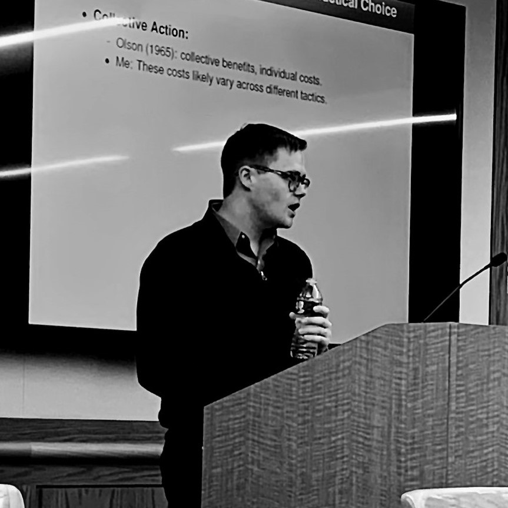
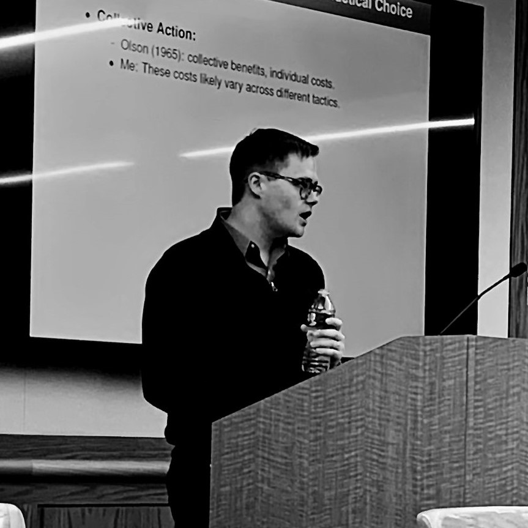

Benjamin Crisman
Ph.D. Candidate |

Benjamin Crisman
Ph.D. Candidate |
I’m a Ph.D. Candidate in the Department of Politics at Princeton University where I use tools from computational social science to study how individuals interpret and respond to political information in the context of social and armed movements.
I also provide consulting services to international organizations, NGOs, and think tanks on issues related to computationally intensive data analysis, policy evaluation, and information design. I am not currently accepting new clients.
Prior to starting at Princeton, I worked as a Research Specialist at the Empirical Studies of Conflict (ESOC) lab evaluating responses to and the prevention of fragility, conflict, and violence and at the Center for Global Development. I hold an MA in Politics from Princeton University [+]Fields: Comparative Politics and Quantitative Methods , an MSc in Development Economics from the University of East Anglia [+]Field: Impact Evaluation (causal inference for program evaluation) , and an AB in Economics and International and Area Studies from Washington University in St. Louis.
Blair, Graeme, Mohamed Bukar, Rebecca Littman, Elizabeth R. Nugent, Rebecca Wolfe, Benjamin Crisman,
Anthony Etim, Chad Hazlett, and Jiyoung Kim. (2020). “Trusted Authorities Can Change Minds and Shift Norms during Conflict .”
[+abstract]
The reintegration of former members of violent extremist groups is a pressing policy challenge. Governments and policymakers often have to change minds among reticent populations and shift perceived community norms in order to pave the way for peaceful reintegration. How can they do so on a mass scale? Previous research shows that messages from trusted authorities can be effective in creating attitude change and shifting perceptions of social norms. In this study, we test whether messages from religious leaders – trusted authorities in many communities worldwide – can change minds and shift norms around an issue related to conflict resolution: the reintegration of former members of violent extremist groups. Our study takes place in Maiduguri, Nigeria, the birthplace of the violent extremist group Boko Haram. Participants were randomly assigned to listen to either a placebo radio message or to a treatment message from a religious leader emphasizing the importance of forgiveness, announcing the leader’s forgiveness of repentant fighters, and calling on followers to forgive. Participants were then asked about their attitudes, intended behaviors, and perceptions of social norms surrounding the reintegration of an ex-Boko Haram fighter. The religious leader message significantly increased support for reintegration and willingness to interact with the ex-fighter in social, political, and economic life (8 to 11 percentage points). It also made people believe that others in their community were more supportive of reintegration (5 to 9 percentage points). Our findings suggest that trusted authorities can be effective messengers for promoting conflict resolution.
[Forthcoming, Proceedings of the National Academy of Sciences]
Crisman, Benjamin.
(2020).
"Disease, Disaster, and Disengagement: Ebola and Political Participation in Sierra Leone."
Studies in Comparative International Development.
https://doi.org/10.1007/s12116-020-09300-x.
[+abstract]
How do widespread public health crises affect political behavior? This article examines the impact of the 2014 West African Ebola outbreak on political participation in Sierra Leone. In addition to the effects observed following conflict and natural disasters, I present evidence that hardship brought on by the outbreak of Ebola virus disease (EVD) substantially decreased participation in civic affairs, measured in self-reported political activity using data from an Afrobarometer survey conducted near the end of the outbreak. To account for selection and endogeneity concerns, I undertake falsification and coefficient stability approaches in addition to controlling for levels of political activity in the 2012 national election. The negative effect seems driven in part by a reduction in trust and perceived performance of traditional institutions and not from an increase in economic insecurity, highlighting the role of external efficacy rather than resource-based mechanisms in mediating the relationship between exposure to the disease and participation.
[publisher's version]
[preprint]
Voytas, Elsa and Benjamin Crisman. (2020). “State Violence and Participation in Transitional Justice: Evidence from Colombia.”
[+abstract]
Can the legacy of state violence undermine participation in transitional justice services designed to consolidate peace after conflict?
We argue that, in the aftermath of
armed fighting, state-perpetrated violence leads to reduced uptake of government reconciliation policies.
We leverage spatial and temporal variation in civilian victimization
by perpetrator and find that in contrast to violence committed by non-state groups, violence carried out
by state forces against civilians is associated with lower levels of
enlistment in Colombia’s state-run victim's registry. We also present survey evidence
linking victimization to lower levels of trust in the government overall. Together, our
analyses demonstrate that disaggregating the identity of armed actors can provide significant theoretical
and empirical advances in our understanding of peacemaking and
post-conflict reconstruction. In the Colombian case, the legacy of state violence leads
to the systematic exclusion of certain types of victims from transitional justice and undermines trust
in the institutions responsible for building durable pathways to peace.
Consequently, our findings have implications both for the design of transitional justice
policies, the study of the legacies of conflict on political and social outcomes,
and processes of post-conflict peacebuilding.
[preprint] [under review]
Crisman, Benjamin. (2020). “March in the Rain: Commitment and the Influence of Protest on Public Opinion.”
[available upon request]
Crisman, Benjamin and Carla Sung Ah Yoon, Curtis Goos, Danielle Hull, Emily Romano, Jennifer Johnson, Michelle Nedashkovskaya, Narayan Subramanian, Solomon Tesfaye, and Yashna Gungadurdoss. (2020).
“Preventing Violent Extremism: Lessons from Kenya.”
Woodrow Wilson School Policy Workshop Report. Princeton, New Jersey.
[+summary]
This report evaluates the first three years of Kenya's National Strategy for Countering Violent Extremism (NSCVE) implementation
(2016:2019), examining the development in Kenya across a range of multilateral, national, subnational, and civil society actors.
The analysis brings to light the tensions of and obstacles to achieving effective coordination, collaboration, and support within
a multi-stakeholder process. The case study of Kenya's implementation offers insight for other countries on how to incorporate global
frameworks; adapt policies and institutions to suit local contexts; and, dynamically evolve through iterative processes.
[report]
Min, Eric. Manu Singh, Jacob N. Shapiro, and Benjamin Crisman. (2017).
“Understanding Risk and Resilience to Violent Conflicts.”
Background paper for the United Nations–World Bank Flagship Study, Pathways for Peace: Inclusive Approaches to Preventing Violent Conflict. World Bank, Washington, DC.
[+abstract]
This research aims to establish potential opportunities for policy intervention by asking the following question:
if we could predict conflict 5-years out, what would separate the predictable failures from the unexpected successes
(i.e. places where conflict was expected but did not happen) and what would separate the predictable successes from
the unexpected failures (i.e. places where conflict was not expected that experience it). The idea is to move beyond
standard conflict prediction variables to identify previously-unrecognized opportunities for preventive action within
a time-frame sufficiently long for significant action by the UN, World Bank, and other international organizations.
Put differently, our goal is to provide policy recommendations by examining what led to unexpected resilience to
conflict in some countries and what happened in places with low risk based on observable characteristics. Existing
studies focus in on a set of states which did become affected by violent conflict without comparing them to a set
of peers based on objective and replicable criteria. This study addresses this issue by looking at the set of
developing countries at the end of the Cold War, predicting a priori which ones would be most likely to become
affected by violent conflict, and identifying surprising successes and surprising failures. Essentially, we use
machine learning to approximate what a country team would do in terms of predicting conflict risk five years
out. This approach allows us to compare states which did become affected by violent conflicts (or remained in
violent conflict) to states which did not (or that emerged from violent conflict). On the basis of careful
comparison between matched cases, we highlight systemic differences and assess potential policies that can
reduce the risk of conflict.
[report]
Iyengar, Radha, Jacob Shapiro, Benjamin Crisman, Manu Singh, and James Mao. (2017).
“Stabilization in Afghanistan: Trends in Violence, Attitudes, Well-being and Program Activity.”
RAND Labor and Population WR-1192.
[+abstract]
This paper analyzes data from multiple sources to better understand the relationship between stabilization programming and trends in key outcomes — including: security, popular support for the government, popular support for antigovernment elements, community cohesion and resilience, health of the Afghan people, economic well-being of the Afghan people, and conflict.
[report]
Crisman, Benjamin, Sarah Dykstra, Charles Kenny, and Megan O’Donnell. (2016).
“The Impact of Legislation on the Hazard of Female Genital Mutilation/Cutting: Regression Discontinuity Evidence from Burkina Faso."
Center for Global Development working paper no. 432. Washington, DC.
[+abstract]
In 1996, Burkina Faso enacted legislation banning the practice of female genital mutilation/cutting (FGM/C). Much of the qualitative literature surrounding FGM/C discounts the impact of legal change on what is considered a social/cultural issue. We use data from the Demographic and Health Surveys DHS(VI) in Burkina Faso to test for a discontinuous change in the likelihood of being cut in the year the law was passed. We find robust evidence for a substantial drop in hazard rates in 1996 and investigate the heterogeneous impact of the law by region, religion, and ethnicity. Overall, we roughly estimate that over a ten year period the law averted the genital mutilation/cutting of approximately 237,591 women and girls. We qualify our findings recognizing that Burkina Faso is a special case with a long history of bottom-up and top-down approaches to eliminating the practice.
[report]
Kenny, Charles and Benjamin Crisman. (2016).
“Results through Transparency: Does Publicity Lead to Better Procurement?"
Center for Global Development working paper no. 437. Washington, DC.
[+abstract]
Governments buy about $9 trillion worth of goods and services a year, and their procurement policies are increasingly subject to international standards and institutional regulation including the WTO Plurilateral Agreement on Government Procurement, Open Government Partnership commitments and International Financial Institution procurement rules. These standards focus on transparency and open competition as key tools to improve outcomes. While there is some evidence on the impact of competition on prices in government procurement, there is less on the impact of specific procurement rules including transparency on competition or procurement outcomes. Using a database of World Bank financed contracts, we explore the impact of a relatively minor procurement rule governing advertising on competition using regression discontinuity design and matching methods. The rule does appear to have a small, positive impact on bidding levels, suggesting the potential for more significant and strongly enforced transparency initiatives to have a sizeable effect on procurement outcomes.
[report]
Crisman, Benjamin, Samikshya Siwakoti, Richa Gupta, and Jacob N. Shapiro. (2021). The Impact of Alerting Social Media Users to Exposure to Information Operations.
Postel, Hannah and Benjamin Crisman. (2020). “High resolution forecasting of conflict induced displacement using computer vision.”
Crisman, Benjamin, Alejandro Feged, Mike Findley, Oliver Kaplan, Kristina Kempkey, Paul Kuhne, Joe Young.
“Hacking” The Reintegration of FARC Rebels in Colombia. Political Violence at a Glance.
[Blog Post]
“My preceptor was absolutely incredible. I have never had a better preceptor. He was able to answer questions and convey material in a simple and engaging way, and also made himself available to us to answer questions outside of precept. I so appreciate all of his work to make the course understandable and enjoyable for us.”
“BEN IS A GEM! HE was so patient with my millions of questions and incredibly clear with his responses. I would not have done even slightly well in this class without Ben. He was so kind, smart, and a genuinely great teacher/communicator.”
“Ben was charismatic, well-versed, and highly patient for everyone in class, regardless of their pace. He encouraged student participation regularly and always offered his services to fit each person's individual needs, and student appreciation in response was evident; there was usually high attendance for each of the precepts. Great preceptor!”
“Precepts were awesome and where the majority of my learning occurred. Ben was patient, kind, knowledgeable, and helpful. Thank you Ben!! I really appreciated how you made the course seem not as overwhelming and maybe even fun.”
“Without Ben's precept I would be completely lost in the course. He helped frame the conceptual within the coding and made the connection clear. He patiently answered our questions and even stayed beyond time to make sure we understood. He also helped guide our questions to study for quizzes and problem sets.”
“BEN IS AMAZING. He was very patient, really helpful throughout precept, and really helped clarify a lot of questions from the lecture, handouts, and psets. also great coding advice.”
“Precepts were amazing, Ben was amazing and super super helpful. Wouldn't change a thing”
“Great! Ben is a fantastic preceptor and he was really good at breaking down concepts and making sure everyone was involved in precept. He also went above and beyond his duties as my preceptors by sitting down with me during office hours and going over how to do my JP - I really, really appreciated that and am so grateful for his time and help!”
“Amazing and intellectually engaging precept.”
“Easily one of the best preceptors I have had at Princeton. Went above and beyond and devoted his time to help students understand the material and create meaningful discussions. He connected the material from lecture with the assigned readings which was very helpful.”
POL938: Senior Thesis Poster Session , Graduate Student Coordinator, Spring 2021
In order to graduate, Politics seniors must present a professional poster describing
their senior thesis research. To prepare students for this event, we provided students
with informational sessions, work shops, and one-on-one consultations. While broadly focused
scientific communication, these sessions covered issues related to public speaking, data visualization,
and user experience (UX).
[handout] [slides] No course evaluation data collected.
Stokes Visualization Hub, Data Visualization Consultant, Spring 2020, Fall 2020, Spring 2021
The Stokes Visualization Hub is a space and service that supports the interdisciplinary digital research and information visualization needs of the Princeton University community. The service is centralized in the E-classroom at Stokes Library in Wallace Hall. Stokes library staff, in collaboration with experts from other departments, work to design and teach workshops focusing on data visualization, qualitative data analysis and the digital research processes.
POL360: Social Movements and Revolution, Preceptor (TA), Spring 2020
This course investigates the politics of protest and revolution, examining the conditions under which protest movements emerge, their choice of tactics, the effects of repression and concessions, and the determinants of movement success. The second part of the course focuses on revolutions, examining the forms they assume and the conditions under which they develop and prove successful. Examples discussed include the civil rights, women's and environmental movements; the French, Russian, and Iranian revolutions; the collapse of communism; and the "color revolutions," the Arab Spring, and other waves of revolution in the contemporary world.
[course feedback] Median rating 5/5.
POL345: Introduction to Quantitative Social Science, Preceptor (TA) ×2, Fall 2019
Would universal health insurance improve the health of the poor? Do patterns of arrests in US cities show evidence of racial profiling? What accounts for who votes and their choice of candidates? This course will teach students how to address these and other social science questions by analyzing quantitative data. The course introduces basic principles of causal inference and programming skills for data analysis. The goal is to provide students with the foundation necessary to analyze data in their own research and to become critical consumers of statistical claims made in the news media, in policy reports, and in academic research.
[course feedback] Median ratings 5/5 & 5/5.
ExecEd: Global Security, Information Processing, and Leadership, Teaching Fellow, Spring 2016
This course introduces participants to the core
analytic principles of information processing. The principles are universally applicable to
problems of extracting reliable and accurate conclusions from information and data.
Second, we apply these principles to critical global security and conflict challenges. In
the course of doing so, participants are also introduced to cutting edge research on
security and conflict. Third, we explore leadership strategies to incorporate the
information processing principles. The goal is for participants not only to master the
principles themselves, but also to develop approaches that will help their home
organizations deal with security and conflict information more efficiently and accurately.
© 2021 Benjamin Crisman